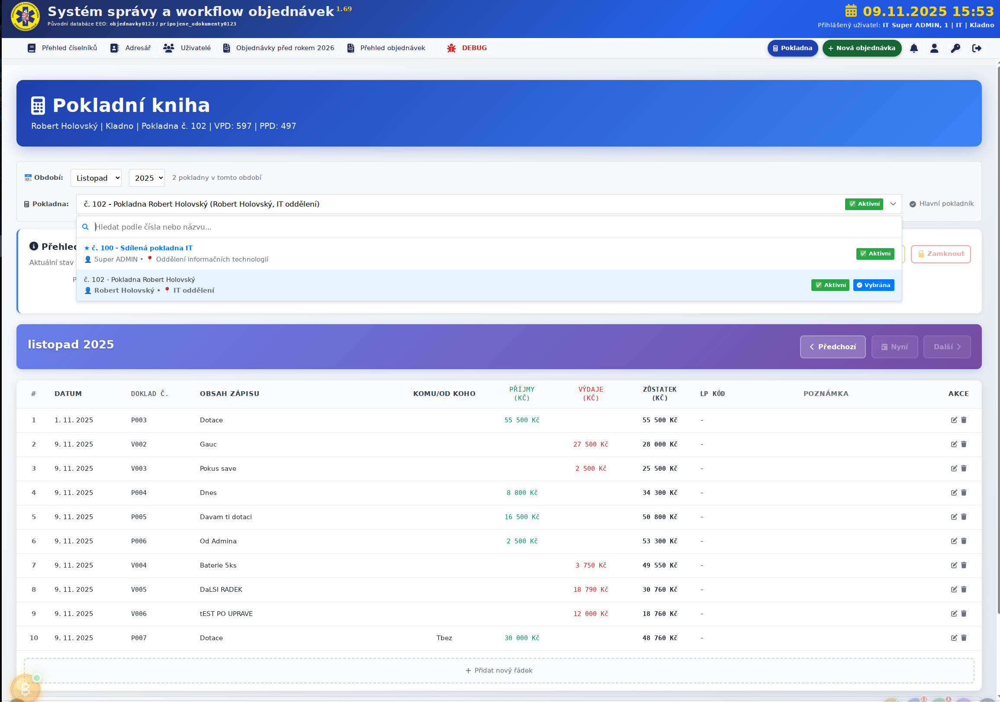
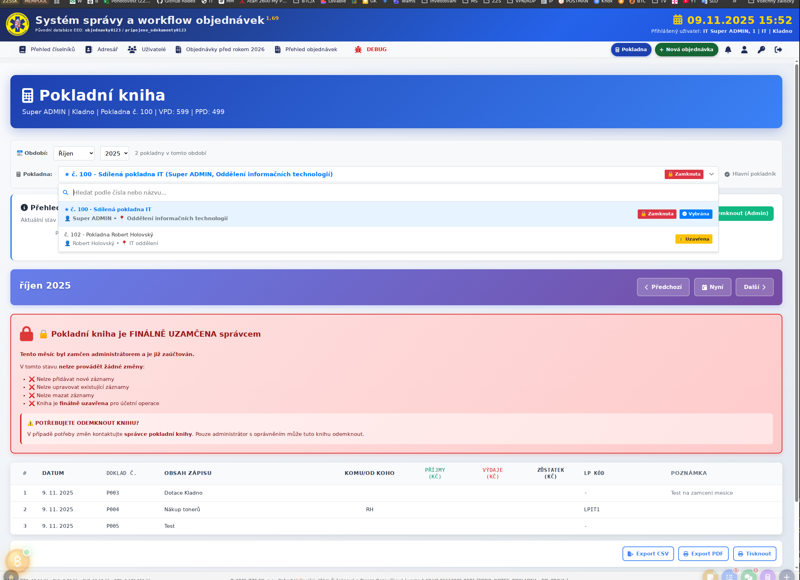
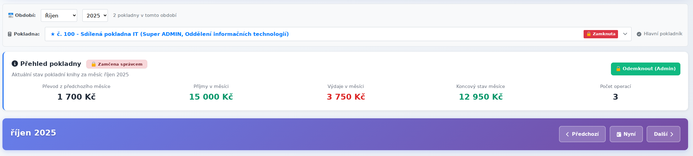

🎯Co je Pokladní kniha?
Pokladní kniha je nástroj pro evidenci peněžních příjmů a výdajů ve vaší pokladně. Každý měsíc má vlastní knihu, která obsahuje všechny transakce s přehledným zobrazením průběžného zůstatku.
Systém zajišťuje kompletní audit trail (každá změna je zaznamenána), automatické číslování dokladů a dvoustupňové uzamykání knih pro zajištění bezpečnosti a neměnnosti účetních dat.
🖥️Hlavní obrazovka - Otevřená kniha
📍 Popis sekcí obrazovky
🔵 Modrý záhlaví
Pokladní kniha - Zobrazuje:
- Jméno uživatele: Robert Holovský | Kladno
- Číslo pokladny: č. 102
- Číselné řady dokladů: VPD: 597 | PPD: 497
📅 Výběr období
Dropdown menu pro výběr měsíce a roku:
- Období: Zvolte měsíc (Září) a rok (2025)
- Info: "2 pokladny v tomto období" - ukazuje počet dostupných knih
🏦 Výběr pokladny
Klikací pole zobrazující aktuálně vybranou pokladnu:
Kliknutím otevřete seznam všech vašich pokladen.
📊 Přehled pokladny
⚠️ Uzavřena uživatelem - Aktuální stav knihy za září 2025
| Převod z předchozího měsíce: | 0 Kč |
| Příjmy v měsíci: | 0 Kč |
| Výdaje v měsíci: | 0 Kč |
| Koncový stav měsíce: | 0 Kč |
| Počet operací: | 2 |
📋 Tabulka záznamů
Hlavní tabulka s detaily všech transakcí:
| # | DATUM | DOKLAD Č. | OBSAH ZÁPISU | KOMU/OD KOHO | PŘÍJMY (Kč) | VÝDAJE (Kč) | ZŮSTATEK (Kč) | LP KÓD | POZNÁMKA |
|---|---|---|---|---|---|---|---|---|---|
| 1 | 9. 11. 2025 | P001 | Dotace A | - | - | - | - | - | - |
| 2 | 9. 11. 2025 | V001 | Výdaj | - | - | - | - | - | - |
🎬 Akční tlačítka
V pravém horním rohu karty přehledu:
- 🔒 Zamknout - Uzavřít knihu (jen vlastník)
- 📅 Otevřít měsíc - Znovu otevřít knihu
V dolním pruhu:
- 📄 Export CSV - Stáhnout jako tabulku
- 📑 Export PDF - Stáhnout jako PDF
- 🖨️ Tisknout - Vytisknout knihu
🔒Zamčená kniha - Finální stav
🚨 Červené upozornění
🔐 Pokladní kniha je FINÁLNĚ UZAMČENA správcem
Tento měsíc byl zamčen administrátorem a je již zaúčtován.
V tomto stavu nelze provádět žádné změny:
- ❌ Nelze přidávat nové záznamy
- ❌ Nelze upravovat existující záznamy
- ❌ Nelze mazat záznamy
- ❌ Kniha je finálně uzavřena pro účetní operace
⚠️ POTŘEBUJETE ODEMKNOUT KNIHU?
V případě potřeby změn kontaktujte správce pokladní knihy. Pouze administrátor s oprávněním může tuto knihu odemknout.
📊 Stav zamčené knihy
🔒 Zamčena správcem
| Převod z předchozího měsíce: | 1 700 Kč |
| Příjmy v měsíci: | 15 000 Kč |
| Výdaje v měsíci: | 3 750 Kč |
| Koncový stav měsíce: | 12 950 Kč |
| Počet operací: | 3 |
📋 Příklad záznamů v zamčené knize
| # | DATUM | DOKLAD Č. | OBSAH ZÁPISU | KOMU/OD KOHO | PŘÍJMY (Kč) | VÝDAJE (Kč) | ZŮSTATEK (Kč) | LP KÓD | POZNÁMKA |
|---|---|---|---|---|---|---|---|---|---|
| 1 | 31. 10. 2025 | P003 | Dotace Kladno | - | 10 000 Kč | - | 11 700 Kč | - | Test na zamčení měsíce |
| 2 | 31. 10. 2025 | V003 | Nákup tonerů | RH | - | 3 750 Kč | 7 950 Kč | LPTT1 | - |
| 3 | 31. 10. 2025 | P004 | Test | - | 5 000 Kč | - | 12 950 Kč | - | - |
✅ Pouze administrátor může:
- Odemknout finálně uzamčenou knihu
- Provádět změny v již zamčené knize (v případě nutnosti opravy)
- Znovu zamknout knihu po úpravách
🏦Výběr pokladny - Přepínání mezi pokladnami
👥 Více pokladen na jednoho uživatele
Systém podporuje přiřazení více pokladen jednomu uživateli. To je užitečné například při:
- Zastupování kolegy během dovolené
- Správě více pokladen různých oddělení
- Přechodu na novou pokladnu (obě aktivní během přechodného období)
📋 Výběr pokladny
Kliknutím na pole "Pokladna" se zobrazí dropdown menu s informacemi:
Hvězdička (⭐) označuje hlavní pokladnu
Informace v záznamu:
- Číslo pokladny: č. 100, č. 102 atd.
- Název pokladny: Sdílená pokladna IT, Pokladna Robert Holovský
- Příslušnost: Jméno uživatele a oddělení
- Označení hlavní: Hvězdička u prioritní pokladny
🔄 Jak přepínat mezi pokladnami?
- Klikněte na pole "Pokladna" v horní části stránky
- Vyberte pokladnu ze seznamu kliknutím
- Kniha se automaticky přenačte pro vybranou pokladnu
💡 TIP: Pokud vidíte jen jednu pokladnu, nemáte přiřazeny další. Pro přidání nové pokladny kontaktujte správce systému.
💡Jak používat pokladní knihu?
🚀 Základní pracovní postup
-
Vyberte pokladnu
Pokud máte více pokladen, klikněte na pole "Pokladna" a zvolte tu správnou. -
Vyberte měsíc/rok
V dropdownu "Období" zvolte měsíc a rok. Pokud kniha pro dané období neexistuje, vytvoří se automaticky. -
Přidávejte záznamy
Klikněte na + Přidat záznam a vyplňte formulář (datum, typ, částka, osoba, popis). -
Sledujte zůstatek
V tabulce vidíte průběžný zůstatek po každé operaci. V přehledu pokladny je souhrn za celý měsíc. -
Uzavřete knihu na konci měsíce
Klikněte na 🔒 Zamknout. Po uzavření nelze přidávat ani upravovat záznamy.
⚠️ Důležité pravidla
- Nelze upravovat uzavřené knihy - pouze správce může knihu znovu otevřít
- Doklady se číslují za celý rok - ne pouze za měsíc (P001, P002... až P999)
- Audit trail - každá změna je zaznamenána (kdo, kdy, co změnil)
- Bezpečnost dat - pravidelné zálohování, nic se nemazá definitivně
🔐Oprávnění a role
Co můžete v pokladní knize dělat závisí na vašich právech. Existuje několik úrovní oprávnění:
| Oprávnění | Popis |
|---|---|
| READ | Prohlížet záznamy v pokladní knize |
| EDIT | Přidávat a upravovat záznamy |
| DELETE | Mazat záznamy z knihy |
| EXPORT | Exportovat knihu do CSV nebo PDF |
| MANAGE | Kompletní správa včetně zamykání knih (pouze správce) |
👤 Rozsah oprávnění
Každé oprávnění může být přiřazeno ve dvou variantách:
_OWN- pouze vaše vlastní pokladní knihy_ALL- všechny pokladní knihy v systému
Příklad:
CASH_BOOK_EDIT_OWN- můžete editovat jen své knihyCASH_BOOK_EDIT_ALL- můžete editovat všechny knihy v systému
🔄Stavy pokladní knihy
Pokladní kniha může být v následujících stavech:
✅ Otevřená (Aktivní)
Otevřena
- Můžete přidávat nové záznamy
- Můžete upravovat existující záznamy
- Můžete mazat záznamy
- Zůstatek se přepočítává automaticky
⚠️ Uzavřena uživatelem
Uzavřena uživatelem
- Knihu uzavřel vlastník na konci měsíce
- Nelze přidávat ani upravovat záznamy
- Správce může knihu znovu otevřít
- Čeká na finální zamčení správcem
🔒 Zamčena správcem
Zamčena správcem
- Kniha je finálně uzamčena pro účetní operace
- Nelze provádět žádné změny (kromě správce)
- Data jsou považována za definitivní
- Pouze administrátor s právem MANAGE může odemknout
📤Export a tisk
📄 Dostupné formáty exportu
📊 Export CSV
Stažení dat do tabulky (Excel, LibreOffice):
- Vhodné pro další zpracování dat
- Obsahuje všechny sloupce tabulky
- Možnost importu do účetních systémů
📑 Export PDF
Stažení knihy jako PDF dokument:
- Vhodné pro archivaci
- Profesionální vzhled pro předání auditorům
- Obsahuje sumarizaci a metadata
🖨️ Tisk
Přímý tisk pokladní knihy:
- Optimalizovaný layout pro tisk
- Automatické stránkování
- Možnost nastavení tiskárny
🆘Časté otázky (FAQ)
A: Klikněte přímo na řádek v tabulce, upravte hodnoty a potvrďte Shift+Enter. Funguje pouze u otevřených knih.
A: Pokud je kniha stále otevřená, můžete záznam upravit nebo smazat. U uzavřených knih musí knihu znovu otevřít správce.
A: V dropdown menu "Období" vyberte požadovaný měsíc a rok. Všechny knihy jsou trvale archivované.
A: Po každém příjmu se zůstatek zvýší (+), po každém výdaji sníží (-). Systém počítá průběžně pro každý řádek.
A: Ano, správce vám může přiřadit více pokladen. Mezi nimi pak přepínáte kliknutím na pole "Pokladna".
A: P = příjmový doklad, V = výdajový doklad. Číslo je automaticky generované a unikátní pro celý rok.
A: Ne, pokud knihu uzavřete. Po uzavření jsou data chráněna a pouze správce s oprávněním MANAGE může provádět změny.
A: Data jsou zálohována automaticky podle nastavení serveru. Doporučujeme pravidelné exporty do PDF pro lokální archiv.
📞 Potřebujete pomoc?
V případě problémů nebo dotazů kontaktujte:
- IT podporu - technické problémy s aplikací
- Správce pokladní knihy - odemknutí knih, přidělení oprávnění
- Vedoucího oddělení - organizační záležitosti